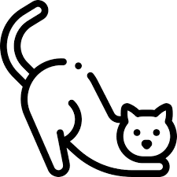
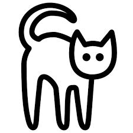
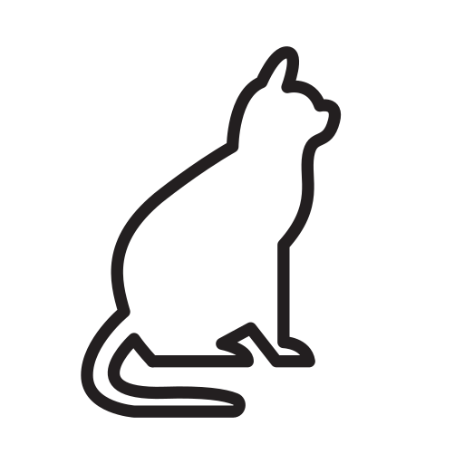

.png)





Os gatinhos têm uma visão notável que os ajuda a caçar eficientemente e a explorar o mundo ao seu redor. Aqui estão algumas curiosidades sobre a visão desses felinhos adoráveis:
Os gatos têm excelente visão noturna devido á alta quantidade de células sensíveis á luz em seus olhos. conhecidos como bastonetes. Isso permite que eles vejam em níveis de luz muito baixos, cerca de seis vezes melhor do que os humenos.
Os olhos dos gatos estão posicionados na lateral da cabeça, o que lhes proporciona um campo de visão de quase 200 graus. Isso significa que eles têm uma visão periférica excepcional, essencial para detectar movimentos e presas potenciais.
Os gatos são especialistas em detectar movimnetos rápidos, graças á sua capacidade de focar em objetos em movimento e ignorar os detalhes estáticos ao seu redor. Isso os ajuda a caçar presas em movimento, como pássaros ou insetos.
Os gatos têm uma visão de cores limitada em comparação com os humanos. Eles podem distinguir algumas cores, principalmente tons de azul e verde, mes têm dificuldade em diferenciar cores como vermelho e laranja.
Você pode notar que os gatos piscam lentamente em sua direção, o que é um sinal de confiança e afeto. Esse comportamento também ajuda a proteger seus olhos sensíveis durante interações sociais.
Uma característica distintiva da visão dos gatos é a pupila vertical, que se contrai em uma fenda quando exposta á luz brilhante e se dilata em condições de pouca luz. Isso os ajuda a regular a quantidade de luz que entra em seus olhos, mantendo uma visão nitpida em diversas condições.
Embora os gatos tenham visão periférica e noturna superiores, sua visão de detalhes a cuta distância não é tão nitída quanto a dos humanos. No entanto, sua capacidade de detectar movimentos sutis compensa essa limitação quando estão caçando ou bricando.
Lembrando que cada pequeno felino é único, e sua experiência visual pode variar com base em fatores como idade, raça e saúde geral. Portanto, é importante observar o comportamento do seu gatinho e consultar um veterinário se notar quaisquer mudanças em sua visão.
Você pode fazer uma limpeza periódica no seu pet com produtos adequados e seguindo recomendações do médico veterinário, para evitar olho de gato inflamado, por exemplo. No geral, podemos dizer que gaze ou algodão embebidos em soro fisiológico ou um colírio próprio para gatos podem ajudar muito a manter o olho de gato saudável e sem sujeirinhas incômodas. Evitando, assim, futuros problemas na região para o felino. Disponibilize um arranhador para o gato gastar suas unhas, pois assim você evita que ele se machuque sem querer ao passar as patas no rosto. Se você tiver mais de um gato, o ideal é que cada um tenha seu próprio acessório. Para realizar esses cuidados, consulte antes um veterinário. Isso é importante para escolher qual as melhores soluções para o seu animal de estimação e evitar condições como gato com olho embaçado ou esbranquiçado.
Causado por um aumento da pressão nos olhos, o glaucoma é uma das principais doenças oculares em gatos. Pode ter diversas origens e levar ao diagnóstico de outras enfermidades. Se não for tratado precocemente, é capaz de levar o animal doente à cegueira. Dentre os principais sintomas, destacam-se: perda de apetite, náuseas, variações comportamentais e, em casos mais avançados, alterações na coloração da córnea. O glaucoma não possui cura, mas seu tratamento é feito por meio de medicamentos específicos para o problema, como colírios e anti-inflamatórios.
A conjuntivite felina é uma enfermidade bastante perceptível aos donos. Consiste em uma inflamação da mucosa do olho que tem por características principais a produção excessiva de remelas, vermelhidão e coceira abundante no locar da inflamação. Em alguns casos, é possível notar inchaço nos olhos ou até mesmo alterações no formato da íris. Para tratá-la, os gatos devem ser medicados com colírios e antibióticos, além de uma limpeza delicada e cuidadosa nos olhos. É necessário que haja uma maior atenção à conjuntivite, já que pode ser um sintoma de outras doenças oculares nos gatos.
Caracterizada por uma macha da pupila dos felinos, a catarata é comum em animais mais velhos. Em alguns casos, é possível que essa doença esteja relacionada à diabetes nos gatos. A opacidade dessa mancha acaba por afetar a visão dos felinos, podendo chegar até mesmo à perda sua total. Tropeços, alterações no caminhar e variações de cor nos olhos e nas pupilas são alguns dos sintomas dessa doença. Se ligadas à diabetes, é possível notar nos animais doentes sede excessiva e perda de peso. Em determinadas circunstâncias, o tratamento da catarata pode consistir até mesmo em uma cirurgia, mas o mais comum é a aplicação de medicamentos locais.
Uveíte é o nome dado à inflamação da parte inferior do olho dos felinos. Se acomete o animal diretamente, recebe o nome de uveíte primária. É chamada de uveíte secundária se acontece em decorrência de outras doenças oculares em gatos. Pode apresentar certo grau de gravidade, então recomenda-se atenção especial de seus donos. Os animais diagnosticados com essa enfermidade, em geral, apresentam: comprometimento da visão, vermelhidão e fotofobia (desconforto em locais muito iluminados). O tratamento da uveíte deve ser feito o quanto antes, a fim de prevenir a perda da visão do animal doente, e geralmente é feito em duas partes: específica e paliativa. Nesta primeira, à base de corticoides, é tratada a causa primeira do problema. Na segunda, por meio de anti-inflamatórios, são tratados os sintomas secundários.
O terçol é uma infecção bacteriana que resulta no inchaço de parte do olho dos felinos que, por muitas vezes, é de fácil percepção. Além da dor e do incômodo, também pode causar vermelhidão nos olhos comprometidos. Na maior parte dos casos, diferentemente de outras doenças oculares em gatos, o terçol desaparece sozinho, mas em outras circunstâncias, recomenda-se o uso de antibióticos.